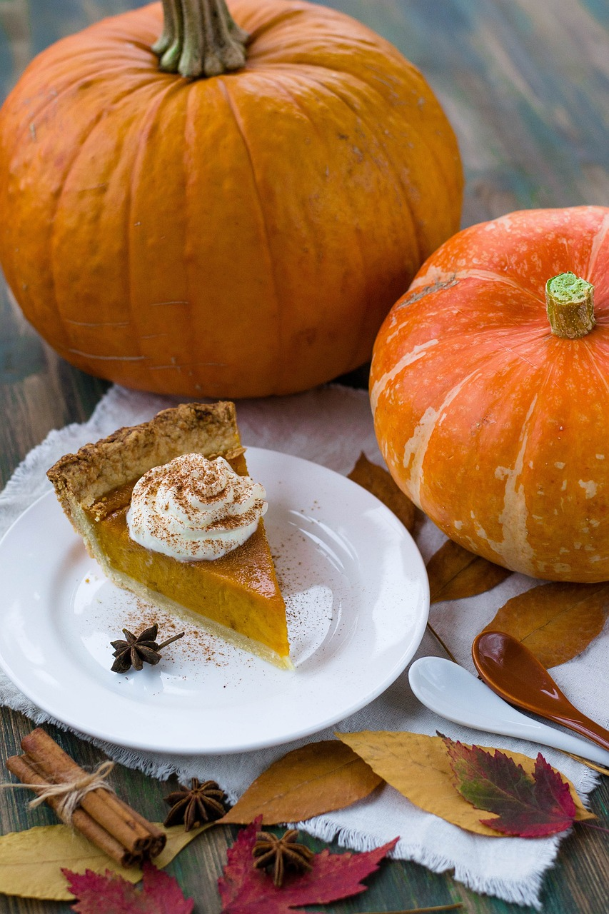

Pumpkin Pie

Description
Indulge in the essence of autumn with this scrumptious pumpkin pie recipe, a delightful symphony of velvety pumpkin puree, warm spices like cinnamon and nutmeg, embraced by a flaky, golden crust. This classic treat, a blend of creamy sweetness and seasonal spices, serves as the perfect centerpiece for any fall gathering, evoking nostalgic coziness with every delicious bite.
Ingredients
- 1 (15 ounce) can pumpkin puree
- 1 (14 ounce) can Eagle Brand Sweetened Condensed Milk
- 2 large eggs
- 1 teaspoon ground cinnamon
- 1/2 teaspoon ground ginger
- 1/2 teaspoon ground nutmeg
- 1/2 teaspoon salt
- 1 (9inch) unbaked pie crust
Directions
- Gather all ingredients and preheat the oven to 425 degrees F (220 degrees C).
- Whisk pumpkin puree, condensed milk, eggs, cinnamon, ginger, nutmeg, and salt together in a medium bowl until smooth.
- Pour into crust.
- Bake in the preheated oven for 15 minutes.
- Reduce oven temperature to 350 degrees F (175 degrees C) and continue baking until a knife inserted 1 inch from the crust comes out clean, 35 to 40 minutes. Let cool before serving.
- Enjoy!